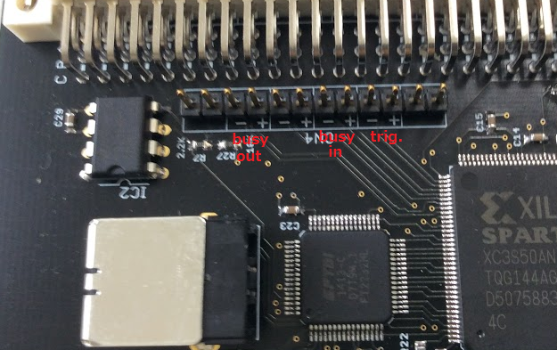
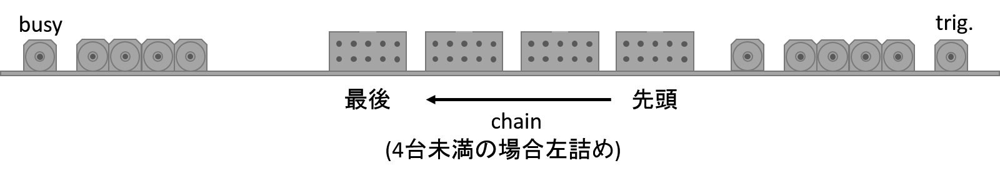

DAQ/MOCO/MOCOを使ったDAQのセットアップ
概要
MOCOを使ったDAQのセットアップについて
手順
- busy, trig.信号線の接続
- MOCOは複数台をchainしてまとめたend of busyを最後のMOCOに出させることができる。
- pinの配置は以下の通り。
 - trig.とbusy outは全てのMOCOに必要
- busy inはchainの先頭のMOCOには不要
- rstmocoの設定
- moco/util/rstmoco でMOCOを初期化する。
- rstmoco MOCO10001A 0 0 (1台のみで使うMOCO)
- rstmoco MOCO10001A 0 1 (chainの先頭のMOCO)
- rstmoco MOCO10001A 1 0 (chainの最後のMOCO)
- rstmoco MOCO10001A 1 1 (chainの中間のMOCO)
- 馬場さんが作ったMOCOの信号分配用のVMEモジュールを使う場合は以下の通り
 - あとは
moco/bin_[module name]/mocobabies_[module name] -l [EFN]
でbabiesを起動しておけばOK - Raspberry Piの起動時にbabimoの起動、rstmocoの実行、モジュールのinit、babiesの起動をするようにスクリプトを用意しておくとよい。